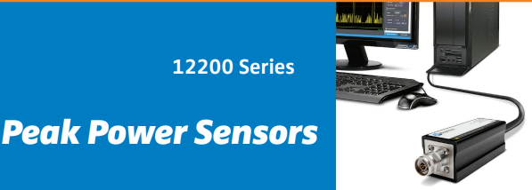
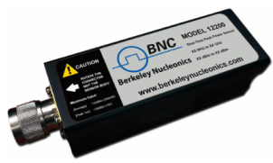
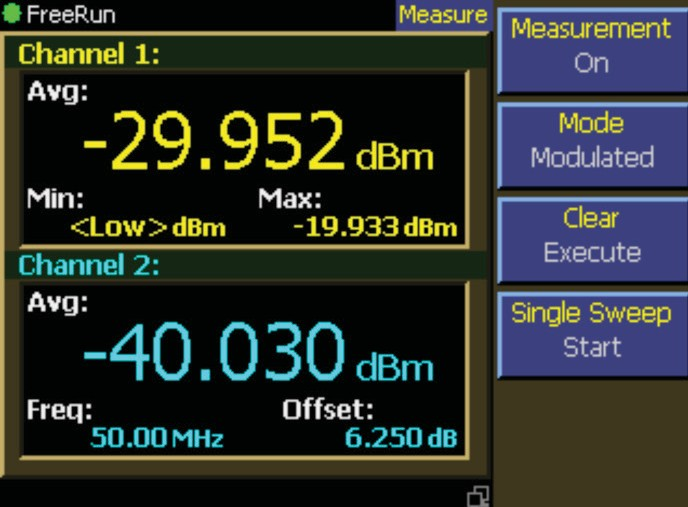
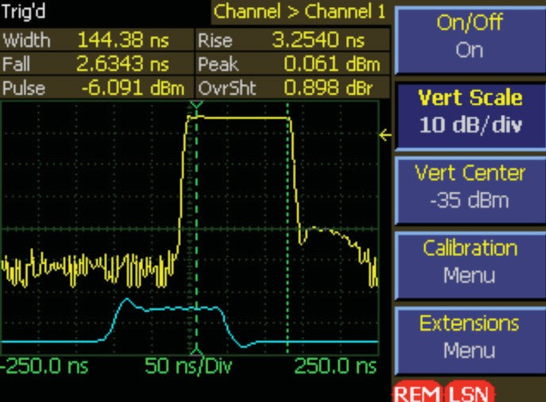
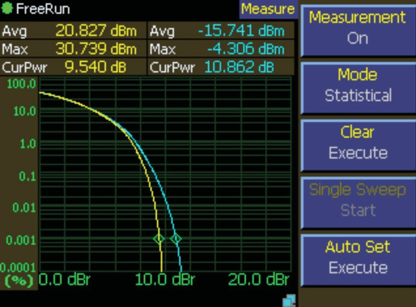
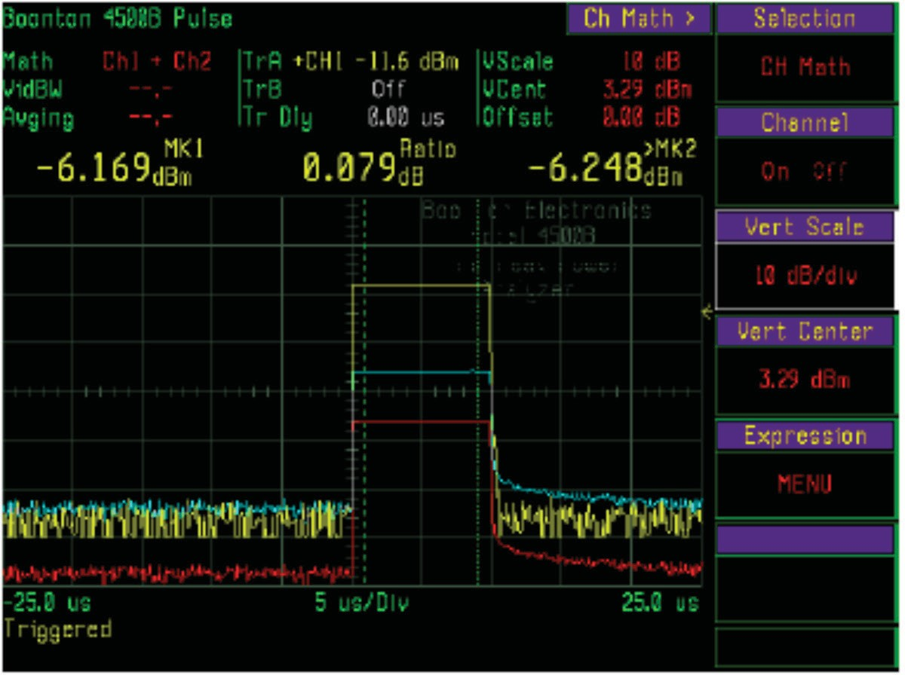

Section 2: Making Power Measurements
Theory survives contact with a signal source. Barely.
Knowing how sensors work is half the battle. Setting them up, calibrating them, triggering them, and interpreting what they report is the other half. This section walks through the working life of a power measurement from equipment selection through accuracy estimation. It is the longest section in the book because it is where the real engineering happens.
Chapter 4: Equipment Selection
RF power measurement can be straightforward when the signal is simple, but the moment frequency, amplitude, or modulation get complicated, the equipment choice starts to matter. This chapter walks through the most common measurement options and shows how to align an application with the equipment available today.

4.1 Choosing the Right Power Meter
You need to measure power. The first question is: what does your signal look like? A small amount of information about the signal is paramount to selecting the correct equipment.
Signal characteristics to nail down before you shop:
- Frequency range. Minimum and maximum carrier frequency. Be honest about both ends. A signal generator that nominally outputs at 10 GHz may have spurs at 100 MHz that you also care about.
- Video bandwidth. Narrowband or wideband modulation? A 5G NR carrier needs more video bandwidth than a CW signal.
- Risetime requirement. How fast does your pulse rise? This determines whether a peak sensor is fast enough to honestly capture the leading edge.
- Dynamic range. What is the minimum and maximum expected power level? Include peak excursions of modulated signals, not just the steady-state mean.
- Modulation. CW, pulse, analog modulation, digital modulation, or some combination?
- Connection. Connector type, coaxial or waveguide, gendered correctly for your fixturing.
- Impedance. 50 ohm, or something else? Most RF systems are 50 ohm. Most TV / video systems are 75 ohm. Custom impedances exist in research labs.
Measurement parameters to specify:
- Power only, or do you also need spectral information?
- Average power only? (Pulse power can be computed from duty cycle if the pulse shape is known.)
- Limited peak information, such as peak-to-average ratio?
- Full time-domain measurements, including pulse profiling?
- Statistical power analysis (CCDF, PDF)?
For simple CW signals, there is a wide choice of solutions. A CW power meter is usually the most economical, and it can measure average power easily and accurately. If the signal is modulated, a CW power meter can still be a reasonable choice as long as a suitable power sensor is paired with it. The first step in sensor selection is to find sensors compatible with the primary characteristics of the signal: minimum and maximum power levels, carrier frequency, and source impedance. The next section of this guide covers sensor selection in detail.
The chief limitation of a power meter is that it yields only amplitude information. When spectral information is also required, other instruments may be more appropriate. Vector signal analyzers, spectrum analyzers, and measurement receivers all perform amplitude measurement while yielding information about the spectral distribution of the signal.
None of those three are true power meters. They generally measure narrowband voltage amplitude rather than broadband power amplitude (heating effect). For some applications, narrowband measurement is preferable. These instruments often perform a swept measurement across a frequency band, and the sweep can miss occasional signal events that generate power peaks at specific frequencies. This happens when the analyzer's swept filter is not aligned with the center frequency of the peak power event at the precise instant it occurs. The trade-offs between power meters and spectrum analyzers are covered in detail later in this chapter.
The average power of a modulated signal can be measured by a CW or average-responding power meter with a suitable sensor. If the user needs peak information, or if the signal has a high peak-to-average ratio, a peak power meter is often a better choice. Peak power meters have several capabilities that must be aligned with the signal and application to deliver accurate measurements. Of chief importance is video bandwidth, discussed in Chapter 3. The sensor and meter must both have sufficient video bandwidth for the signal, or modulation-induced power errors will occur.
Peak power meters nearly always measure average and peak power simultaneously, and usually provide the ratio between the two. Most can perform triggered waveform acquisition and pulse profiling in some form. The most advanced models offer detailed waveform analysis, sub-nanosecond time resolution, and statistical power information.
Whether peak power information is necessary for modulated measurements is usually an application question. For simple go/no-go tests in which a device is being compared to a known-good reading, an average power measurement is often sufficient. The reading indicates that the device under test has an RF output at about the level expected, so it is likely functional. When trying to quantify performance parameters, however, it often becomes necessary to measure peak power parameters or perform pulse profiling.
For pulse signals such as radar, average power meters were the traditional choice for decades. If the pulse is close to rectangular, its duty cycle is accurately known, and there is minimal signal bleed and noise during the off interval, a simple duty-cycle correction can yield the pulse power. In many cases those constraints cannot be guaranteed, and the waveform shape must be monitored, traditionally with an oscilloscope and crystal detector, to confirm that the pulse looks the way it is supposed to look.
In those cases a peak power meter is often a more economical solution. Most can measure and display pulse waveforms with high accuracy, providing average power, pulse power, and pulse shape. More advanced instruments measure pulse parameters such as risetime, width, overshoot, and droop. Section 7.1 includes a discussion of using peak power meters for pulse measurements.
The need for peak measurement has expanded as digital modulation has filled the wireless arena. These signals have high peak-to-average ratios, with the highest peaks occurring relatively infrequently. This makes amplifier headroom an important parameter, since clipping the peaks results in data loss. Because clipped peaks happen rarely, their impact on the average power can be small, which makes compression hard to detect with average-only measurement.
A peak power meter measures the average power accurately and continuously measures the instantaneous power. Compression or clipping of infrequent peaks shows up as a reduction in peak power and peak-to-average ratio. Statistical methods can then quantify the impact of peak compression on the signal and help predict the system's bit error rate. Statistical amplifier testing is discussed in Section 8.3.
Pro tip. Buy the sensor, test the software. A beautiful sensor with an ugly driver is a miserable purchase.
4.2 Choosing an RF Power Sensor
The absolute or relative power of CW signals can be accurately measured using CW diode sensors, average-responding (stacked or multipath) diode sensors, thermal sensors, or peak power sensors. Which device you choose depends mainly on the power level and modulation characteristics of the signal, plus the measurement values you need to extract. Sensor technologies are covered in Chapter 2.
Connector first. The first practical question is how the sensor must connect to the source being measured. Below 18 GHz, nearly all power sensors use a coaxial Type-N connector. SMA shows up on some lower-cost or smaller-form-factor sensors. As frequencies increase, smaller coaxial connectors are used: 3.5 mm, 2.92 mm, 2.4 mm, and 1.85 mm are common, providing measurements above 60 GHz. Waveguide is another option from below 20 GHz to more than 100 GHz. Waveguide sensors are relatively narrow band (less than one octave), so it is important to match the sensor to the frequency band. They are more difficult to calibrate and are generally limited to CW or average power measurements.

CW Diode Sensors. If the signal is always unmodulated, or if the power level never exceeds the square-law threshold for diode detectors (about -20 dBm), a CW diode sensor is an excellent choice. It gives wide dynamic range, wide RF bandwidth, and true-average power detection in a small package.
CW diode sensors use high-frequency semiconductor diodes to detect the RF voltage developed across a terminating load resistor. Dual diodes are typically used to detect both the positive and negative carrier cycles, making the sensor symmetrical and relatively insensitive to even harmonics.
CW diode sensors typically offer a lower measurement limit of about -70 dBm, and can measure a maximum CW power of about +20 dBm before overloading. An integrated attenuator ahead of the detector is sometimes used to shift this range to higher power levels. CW diode sensors are relatively fast, with response speeds in the millisecond range at higher power levels. As the input power falls, response must slow considerably (via filtering) to yield useful results: typically around a second at -60 dBm, and longer to reach -70 dBm.
Thermal Power Sensors. For modulated signals with peaks exceeding -20 dBm, several options exist. Thermal sensors respond to the average power of any signal, CW or modulated. Their chief drawback is that they lack the sensitivity of diode sensors. The lower measurement limit rarely extends below -30 dBm, with a maximum average power limit around +20 dBm. They handle a fairly large crest factor and can tolerate peaks well in excess of the average power rating if the pulse width and duty cycle are short. Response speed is slower than a diode sensor: 50 ms or so at the highest power levels, and one second or longer below -20 dBm.
Multipath Diode Sensors. Multipath diode sensors integrate multiple diode detectors and attenuating power splitters into a single calibrated unit. They operate two or three pairs of detectors and select the output of whichever pair is operating in its square-law region. This extends the true-average response of the diode sensor to much higher power levels. The result is a device that offers nearly the dynamic range of a CW diode sensor and close to the averaging accuracy of a thermal sensor. Drawbacks include cost, slow response, occasional noise at certain power levels, and complications from frequency and temperature correction differences between detector pairs. Modern software techniques minimize the last two issues. The Berkeley Nucleonics Model 12100 series uses a thermally stabilized two-path multipath architecture that delivers true-RMS readings across more than 80 dB of dynamic range without zeroing or pre-use calibration.
Peak Power Sensors. Peak power sensors offer dynamic range between thermal and CW diode sensors, but with extremely fast response speeds (microseconds or less). As long as this response speed (called video bandwidth, discussed in Chapter 3) is adequate, the peak sensor's detector can faithfully follow the signal's envelope modulation. The output is then accurately linearized and averaged by a high-speed sampler with suitable software processing. Because peak sensors continuously yield instantaneous power, a peak power meter delivers more than the average. Burst (time-gated) power, full waveform reconstruction, pulse profile and timing, peak power, and statistical power analysis are some of the more common measurements provided.
Engineer's corner. A common mistake is buying a peak sensor purely on rise-time bragging rights. If your application is communications average power, the 12100 family of true-RMS sensors will deliver more useful, more accurate, more repeatable numbers than a faster peak sensor running in average mode. Match the tool to the question.
4.3 Selecting a Measurement Mode
Some power meters handle only specific sensor types. Others offer considerable flexibility. Sensors are paired with measurement modes that align with their capabilities.
CW or Continuous Mode. The basic continuous or free-run mode used for CW power sensors. It returns the average power of a CW signal, and will also return the average power of a modulated signal when paired with a thermal sensor or with a diode sensor operated within its square-law region.
Modulated Mode. A more advanced continuous or free-run mode. Similar to CW mode, but also returns limited peak information (peak, minimum, peak-to-average ratio, and dynamic range) when a peak power sensor is used. Some peak meters call this "free-run" mode.

Triggered or Pulse Mode. Limited to peak power sensors. Typically includes full pulse profiling and time-domain measurements. A signal waveform is usually displayed, and the user can select specific time intervals on the waveform to measure.

Statistical Mode. Limited to peak power sensors. Returns information about the signal's statistical power distribution. Sometimes implemented as part of Modulated mode (continuous statistical information) or as part of Pulse mode (synchronous or gated statistical information).

Measurement modes are covered in more detail in Chapter 6. The following selection guide is a starting point.
Choose a CW Diode Sensor in CW Mode when:
- The signal is at a low power level, below about -40 dBm.
- The signal is CW, an unmodulated RF carrier.
- You need the average power of a modulated signal whose peaks do not exceed the square-law threshold (about -20 dBm).
Choose a Thermal Sensor in CW Mode when:
- The signal is CW or modulated and has an average power level above about -20 dBm.
- The signal contains a close-to-ideal pulse waveform with narrow duty cycle and peaks that would overload the square-law range of a CW diode or multipath diode sensor.
Choose a Multipath (true-RMS) Sensor in Modulated Mode when:
- You want true-RMS average power on any modulation, regardless of crest factor.
- The signal includes 5G NR, LTE, OFDM, CDMA, multi-tone, or any other modulation with a high or variable peak-to-average ratio.
- You need long-term stability without zeroing interruptions.
Choose a Peak Power Sensor in Modulated Mode when:
- The signal has moderate power, above about -40 dBm.
- The signal is continuously modulated with a video bandwidth less than about 165 MHz.
- Modulation may be periodic, but only non-synchronous measurements are required (overall average and peak).
- Noise-like digitally modulated signals, such as CDMA or OFDM, when only average and peak measurements are required. Use Statistical Mode if peak probability information is needed.
Choose a Peak Power Sensor in Pulse Mode when:
- Periodic or pulse waveforms with pulse power above about -40 dBm. Pulses can be any shape.
- Bursted signals that need power measurement synchronized with the modulation.
- Any time-domain power profile or time-gated measurement.
Choose a Peak Power Sensor in Statistical Mode when:
- The signal is at moderate power, above about -40 dBm.
- The signal is noise-like digital modulation (CDMA, OFDM, 5G NR) and probability information is helpful.
- The signal is modulated with random, infrequent peaks, and you need to know peak probability.
4.4 Measuring Complex Modulated RF Signals: Power Meters Versus Spectrum Analyzers
A number of RF and microwave amplitude-measuring instruments have been developed for wireless communications, cellular and mobile radio, and commercial and government / military radar. For simplicity, divide them into two categories: tuned and broadband.
A broadband or untuned power measurement uses a simple combination of a power detector and a display or recording instrument. A tuned measurement is performed by a super-heterodyne, receiver-type circuit consisting of an input amplifier or attenuator, local oscillator, mixer, IF filters and amplifiers, and a power detector or digitizing system. The basic receiver blocks combine to make spectrum analyzers, microwave receivers, vector signal analyzers (VSAs), and cellular radio test sets.
For speed and accuracy over wide bandwidth, the power detector / recording instrument combination (the power sensor / meter pair) provides either average or modulated carrier power at the input to the sensor. Recent sensor advances combined with improved DSP let the power sensor / meter combination quickly and accurately measure parameters including average power, peak and peak-to-average ratio, and time-domain profiles of complex digital modulation formats. The power sensor / meter has no frequency selectivity, but newer instruments can provide time-slotted measurements and rich color displays for waveform inspection.
For fast rise time and wide-video-bandwidth peak measurements, the RF / microwave diode detector is often the best choice. Diode detectors also excel where high sensitivity and wide dynamic range are required. Thermistor (bolometer) and thermocouple detectors provide accurate true-average power measurements of CW and wideband signals, particularly for calibration applications.
Unlike power meters, super-heterodyne instruments such as spectrum analyzers offer frequency selectivity with limited bandwidth. They are designed to perform relatively narrow-band power measurements with emphasis on the spectral power distribution. Recent progress in high-speed digitizing and DSP has improved analyzer accuracy and functionality for digitally modulated signals. Some of the latest analyzers also provide time-domain and statistical power analysis.
Uncertainty and Error Sources
There are many sources of error and uncertainty when measuring the power of any RF signal. The wide bandwidth and dynamic range of complex modulated signals further complicate the picture. For CW signals, RF power meters are the accepted standard for accurate power measurement. The choice is less clear once modulation is added. There is a temptation to reach for a spectrum analyzer for its frequency-domain visibility, but in addition to higher cost there are trade-offs that often reduce measurement accuracy.
Items that contribute to error in the RF peak power meter include signal source mismatch, power reference and detector nonlinearity, calibration factor uncertainty, and instrument noise and drift. Source mismatch errors arise from impedance variation between the RF source and the sensor input. For most measurements, mismatch is the single largest source of error, and maintaining the best possible match between source and sensor improves accuracy.
Sensor linearity is the next largest source of error for diode-based sensors used at wide bandwidth and high dynamic range. Two diodes in a full-wave rectifying arrangement improve sensor linearity. For signals below -20 dBm down to the noise floor, the diode circuit has a linear response and requires minimal correction. Above -20 dBm the sensor must use linearity correction to compensate for diode nonlinearity. Linearity correction tables are typically programmed into the sensor at factory calibration and let the instrument display the correct power reading even when the underlying diode response is not perfectly linear.
To correct for small sensor and meter response changes at the time of measurement, most high-quality power meters include a built-in traceable calibration source, often a 1 mW, 50 MHz reference. Power sensor calibration is covered in Chapter 5. The combination of factory and field calibration generally gives the best correction for sensor nonlinearities across the entire dynamic range.
A basic analog spectrum analyzer includes a power detector and measurement circuitry, but a spectrum analyzer also requires many additional components for frequency selectivity. Variable input attenuators, oscillators, mixers, filters, and amplifiers all contribute to the uncertainty of the power measurement. Modern spectrum analyzers reduce errors by performing some of these functions digitally.
The incoming RF signal is usually applied to a wideband variable input attenuator to reduce its amplitude to an acceptable level for the mixer. Variable or step attenuators rarely achieve excellent RF matching over a wide frequency range, so mismatch error is the first uncertainty seen by the incoming signal. The attenuator is calibrated for attenuation versus frequency at each setting, but uncertainty remains.
Additional uncertainty arises when switching between attenuator settings, since each setting presents a different input impedance to the source. This produces a mismatch loss that is different for each setting. The mismatch losses are calibrated out only if the complex source impedance of the signal being measured is the same as that of the calibration signal used during attenuator characterization. Real-world sources rarely match the calibration source exactly, so the actual mismatch loss at each attenuation setting differs from the stored calibration value, and the power reading shifts each time the attenuator range changes.
Power meters do not have a narrow-dynamic-range mixer and do not require a step-attenuator input. The RF source is applied to the power detector (and its built-in precision termination) directly, or through a single fixed attenuator. In addition to maintaining a very good match across a wide frequency range by removing the attenuator switching circuitry, the power sensor presents a fixed termination to the RF source. While this does not eliminate mismatch loss, the loss remains constant over the full dynamic range of the signal, which greatly improves measurement linearity.
Power meters have additional accuracy benefits because they have no heterodyne stage. The local oscillator, mixer, and filter all contribute to spectrum-analyzer measurement uncertainty. The mixer is a nonlinear device, and like a diode detector, its transfer function must be carefully characterized for frequency, amplitude, and temperature. Typical mixers have poor RF match. Because the mixer is isolated from the RF source by the input attenuator, the poor match is only "seen" by the source at the analyzer's most sensitive setting, but the LO, IF, and detector stages must each be characterized as well.
For the classic spectrum analyzer, the input attenuator, multiple frequency bands, local oscillators, mixers, IF amplifiers and filters (including the resolution-bandwidth filter) are all analog components and contribute to uncertainty. Modern instruments implement some of these stages digitally, which reduces uncertainty. Newer digital analyzers eliminate some LO and mixer issues but add ADC quantization error and sample-and-hold jitter. Careful design minimizes or compensates for these effects.
The analyzer's resolution-bandwidth filter may be adequate for a single-frequency CW power measurement, but for wideband digitally modulated signals, portions of the channel's spectrum, and portions of the adjacent channel, may be included or excluded by the filter, reducing accuracy.
The level of measurement uncertainty is greater for a spectrum analyzer than a peak power meter because of the additional measurement stages. For many users this accuracy trade-off is offset by the additional functionality of frequency selectivity. The right choice depends on what question matters most.
Benefits and Limitations of the Power Meter
Today's RF peak power meter is fast and accurate while providing true power measurements of the signal in the time domain. Whether the input is a pulsed RF signal or a complex digitally modulated waveform, the peak power meter is built to measure peak and average power levels accurately.
Complex modulated signals like CDMA are noise-like, with random power peaks, and require a statistical approach for proper measurement. Built-in DSP lets the peak power meter perform statistical analysis on these complex signals quickly. Acquisition rates of 100 Msa/s sustained, with triggered burst rates also at 100 Msa/s, drive probability density functions (PDF), cumulative distribution functions (CDF), and complementary CDFs (CCDF) showing how often the signal sits at each power level. The CDF and CCDF illustrate the fraction of time the transmitter crest factor is above or below a chosen level, which makes amplifier compression and clipping visible. This is useful during amplifier design, when sizing power and thermal requirements, and during operation, when corrective action is needed to maintain optimum transmitter output. Section 6.3 covers statistical power analysis in depth.
Modern meters offer adjustable markers to limit the area of measurement and read the power at any point across the waveform. The feature is used to identify the maximum or minimum peak power, long-term average power, and peak-to-average ratio in a specific area, usually a particular channel or time slot. Berkeley Nucleonics instruments include oscilloscope-like triggering capabilities to capture particular waveform segments. Section 6.2 discusses triggered and pulse measurements with peak power meters.

Excellent input matching across the entire sensor frequency range minimizes mismatch error and improves accuracy. Combined with temperature drift compensation, modern peak power meters measure absolute power to within a fraction of a dB, and relative power to within hundredths of a dB.
Unlike a tuned instrument, the power meter cannot provide carrier frequency or spectral information, and it cannot measure power within a specific channel bandwidth. The peak power meter is a cost-effective way to obtain time-domain (pulse) measurements, average and peak power, and power statistics such as the CCDF of complex modulated signals.
Benefits and Limitations of the Spectrum Analyzer
The primary advantage of super-heterodyne instruments such as spectrum analyzers is the ability to limit a power measurement to a desired frequency range or a specific channel in the presence of adjacent channels. With improvements in DSP, microelectronics, and linear amplifiers, DSP-based spectrum analyzers have improved measurement accuracy for many signal types, including the latest complex digital modulation formats. They display amplitude versus frequency in the band of interest, but the capability comes at a high cost, typically two to four times the price of a high-performance peak power meter.
The frequency-tuning capability can also be a hindrance when measuring the power of a wideband signal. Use of an RBW filter narrower than the bandwidth of the signal causes power to be added from the adjacent channel, giving an inaccurate reading. Because the measurement is band-limited, some noise power is excluded from the area of measurement, again reducing accuracy.
Three quick examples illustrate the issue:
- CW signal. Easily characterized with a swept or stationary center frequency and a constant RBW setting. The measurement is straightforward.
- Wideband modulated signal narrower than RBW window. The center frequency must be swept and the power integrated to measure the total power of the signal's full spectrum. The sweep takes much longer than the same measurement with a peak power meter.
- Multiple adjacent channels with inadequate RBW separation. When the RBW cannot be made wide enough to encompass three channels but is not narrow enough to fully exclude the adjacent channels, a very narrow RBW and a slow sweep are required.
Magnitude accuracy is also reduced when sweeping fast to capture transitioning signals. As a frequency-domain instrument, the spectrum analyzer lacks the wide instantaneous dynamic range needed to provide meaningful statistical data for a PDF, CDF, or CCDF, which is vital information for complex digitally modulated communication signals.
Summary
For pulsed-power applications such as radar, the peak power meter is the clear choice for fast, accurate time-domain measurements. Fast rise time and low-duty-cycle signals demand wide dynamic range to measure large peak-to-average level differences.
For communications signals, such as the noise-like modulation of CDMA or OFDM, a peak or true-RMS power meter is attractive because of wide dynamic range, wide video bandwidth, and statistical analysis capability.
When frequency or spectral information is not required, the RF power meter (peak or true-RMS) provides the best combination of speed and accuracy across a wide frequency range, at a price well below most spectrum analyzers. The spectrum analyzer provides frequency content and selectivity that power meters do not.
The best test benches keep both kinds of instruments on hand. They answer different questions.
4.5 Oscilloscopes and Detectors
Before modern peak power meters were available, a system that included a crystal detector, oscilloscope, average power meter, pulse generator, and assorted couplers was assembled to capture pulse waveforms from high-power amplifiers used in radar.
In a typical setup, the CW input signal is connected to the pulse amplifier (DUT) input and pulse-gated by an external generator to produce a pulsed radar output. The signal passes through a directional coupler to either a dummy load or an actual antenna, and to the crystal detector system. The test signal is split between an average power meter and a crystal (envelope) detector connected to an oscilloscope. The CW power meter provides an absolute average power measurement, while the scope provides the pulse envelope shape. The duty cycle is the pulse repetition interval divided by the pulse width. Pulse power is then calculated as average power divided by duty cycle.
This calculation assumes constant power during the pulse-on interval, a perfectly rectangular pulse envelope, and a constant duty cycle. In practice, errors creep into the pulse-power calculation from common pulse-waveform anomalies: overshoot, ringing, slow edge transitions, droop. None of these are exotic. They show up routinely in production radar transmitters.
A modern peak power sensor and a crystal detector circuit differ in several important ways. A typical single-ended detector has limited dynamic range, a fairly high noise floor, no factory calibration of the detector itself, half-wave rectification (which cannot accurately measure asymmetrical waveforms and is sensitive to harmonic content), and difficult matching to the RF source because the parallel effect of the output load impedance affects input VSWR. The output load is needed to achieve fast pulse response. Whether it is the scope's internal 50-ohm termination or an external resistor, a portion of that impedance appears in parallel with the detector's input termination. The effect is small at low input levels but pronounced at high RF inputs. Calibration algorithms can improve the single-ended detector's accuracy, but a dual-diode differential sensor has several important advantages.
The differential system with two balanced diodes measures the fully rectified waveform. This improves linearity and measurement response time and cancels most waveform asymmetry for true signal-envelope detection. The differential configuration also reduces common-mode noise, lowering the sensor noise floor and increasing dynamic range. Full-wave detection significantly improves accuracy on signals with high even-harmonic content. Calibration at multiple power levels spanning the sensor's linear range (the diode's square-law region) sharpens the result further. Modern instruments correct for nonlinearity outside the square-law range, delivering calibrated measurements up to the detector's power limit.
A modern two-channel peak power meter offers an additional benefit: simultaneous forward and reflected power measurement. With Channel 1 monitoring the radar output (reference) and Channel 2 monitoring the antenna return (reflected), antenna efficiency (return loss, S11) can be measured directly. The extra dynamic range of a calibrated dual-diode sensor lets a single instrument capture forward and reflected power. A traditional detector feeding an oscilloscope, in conjunction with an average power meter, limits dynamic range and requires splitting the input signal to perform a single measurement. The two-channel peak power meter offers a simpler, more convenient antenna return loss measurement.
Pro tip. If you are still using "scope plus detector" for modulated-signal pulse work, the time saved by a modern peak sensor will pay for the sensor in a matter of weeks.
Check your understanding
Three quick questions on making power measurements. Your answers save on this device.